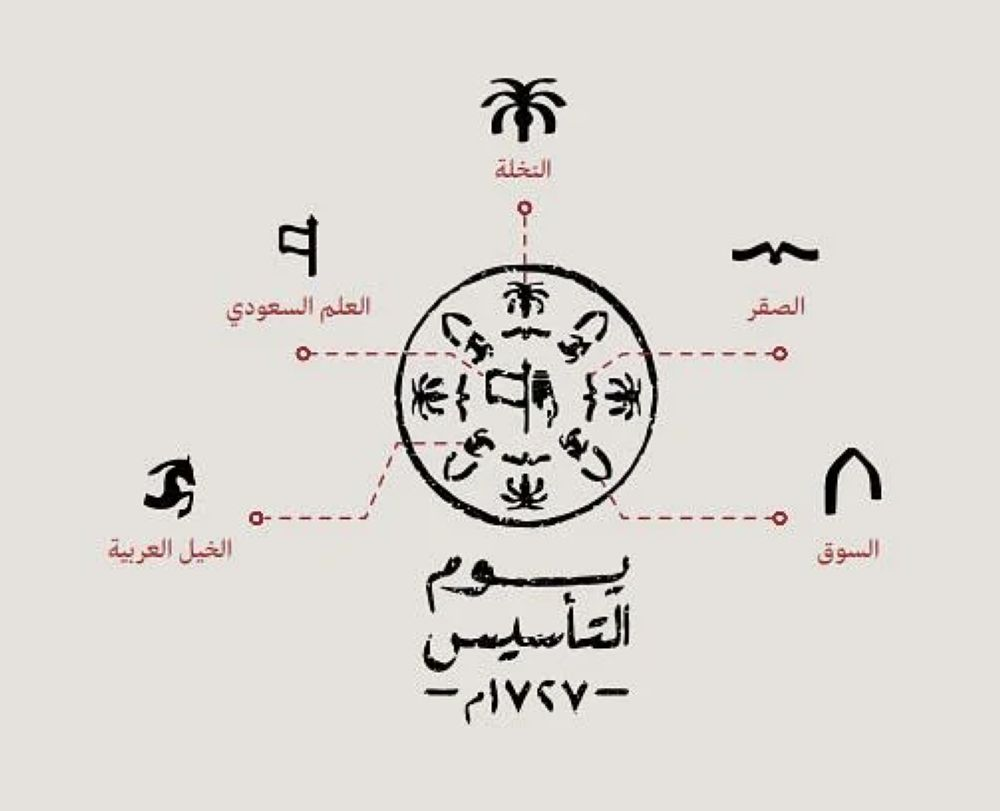

ما هو يوم التأسيس
هو مناسبة وطنية للاحتفاء بذكرى تاريخ تأسيس الدولة السعودية التي أسسها الإمام محمد بن سعود قبل ثلاثة قرون؛ حيث أسس كياناً سياسياً يحقق الوحدة والاستقرار والازدهار، وفي هذا اليوم أصبحت الدرعية عاصمة الدولة السعودية الأولى.
صدر الأمر الملكي الكريم من خادم الحرمين الشريفين الملك سلمان بن عبدالعزيز آل سعود بأن يكون يوم 22 فبراير يوماً للتأسيس وهو اليوم الذي يرمز إلى العمق التاريخي والحضاري والثقافي للمملكة العربية السعودية عندما أسس الإمام محمد بن سعود الدولة السعودية الأولى عام 1139هـ / 1727م.
الفرق بين علم الدولة السعودية الأولى والمملكة العربية السعودية
علم الدولة السعودية الأولى
علم المملكة العربية السعودية
الاحتفالات
يتم الاحتفال بيوم التأسيس السعودي بمجموعة متنوعة من الفعاليات، بما في ذلك المسيرات والحفلات والمهرجانات الثقافية. يعد يوم التأسيس عطلة للسعوديين لإظهار وطنيتهم وحبهم لبلدهم وتقديرا للجهود المبذولة لمؤسسي هذا الكيان العظيم.
رموز شعار التأسيس

أهداف يوم التأسيس
- الاعتزاز بالجذور الراسخة للدولة السعودية.
- الاعتزاز بالارتباط الوثيق بين المواطنين وقادتهم.
- الاعتزاز بما ارسته الدولة السعودية من الوحدة والاستقرار والأمن.
- الاعتزاز بصمود الدولة السعودية الأولى والدفاع عنها أمام الأعداء.
- الاعتزاز باستمرار الدولة السعودية واستعادتها لقوة جذورها وقادتها.
- الاعتزاز بالوحدة الوطنية للمملكة العربية السعودية التي أرساها الملك عبدالعزيز بن عبدالرحمن الفيصل آل سعود.
- الاعتزاز بإنجازات الملوك أبناء الملك عبدالعزيز في تعزيز البناء والوحدة.
أضف لمعلوماتك
- يرجع نسب آل سعود إلى الدروع من بني حنيفة من بكر بن وائل من بني أسد بن ربيعة بن نزار بن معد بن عدنان
- حكم الدولة السعودية الأولى أربعة حكام بدءا من المؤسس الإمام محمد بن سعود وحتى الإمام عبدالله بن سعود بن عبدالعزيز بن محمد بن سعود وبلغت أقصى اتساع لها في عهد الإمام عبدالعزيز بن محمد بن سعود
- تأسست الدرعية-عاصمة الدولة السعوديةالأولى-عام 850 على يد الجد الأعلى للأيرة الحاكمة مانع المريدي
- استمرت الدولة السعودة الأولى أكثر من 93 سنة
- كانت مساحة الدولة السعودية الأولى تزيد عن 2.3 مليون كيلومتر مربع